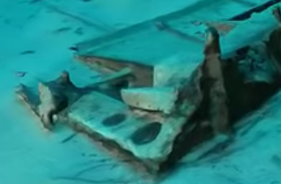

ste proyecto busca crear una plataforma de comunicación y apoyo para las personas que conforman la comunidad académicas de las Instituciones de Educación Superior, y en particular a la comunidad de la Universidad Intercultural Bilingüe. Si bien los estudiantes y docentes de las Universidades Interculturales Bilingües cuentan la posibilidad de acceder a los recursos científicos de acceso abierto que se encuentra libre y disponible en Internet, existen factores estructurales concretos que limitan el uso, aprovechamiento y apropiación sistemática de estos recursos.
